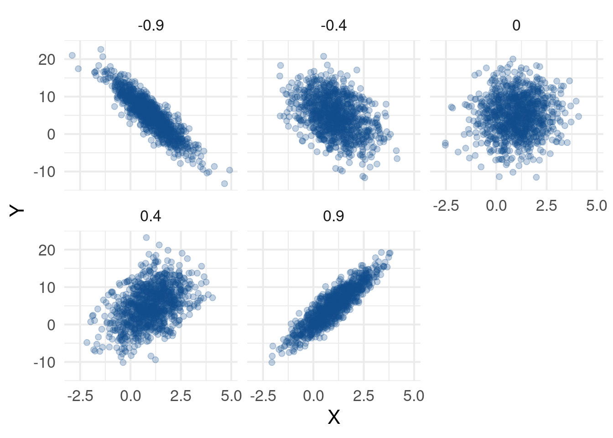
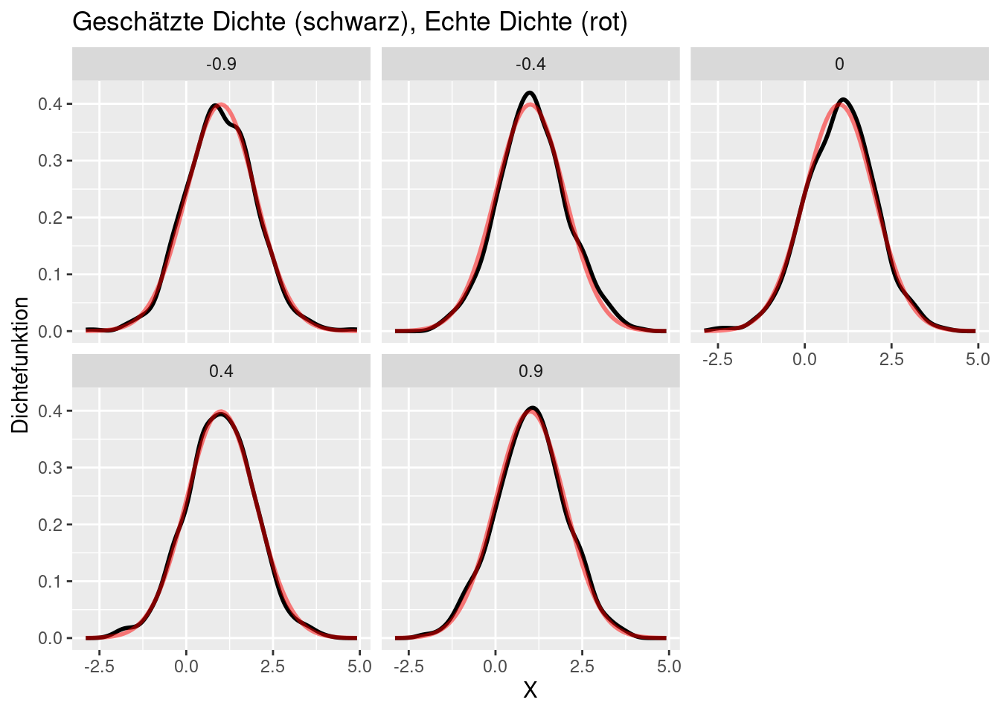
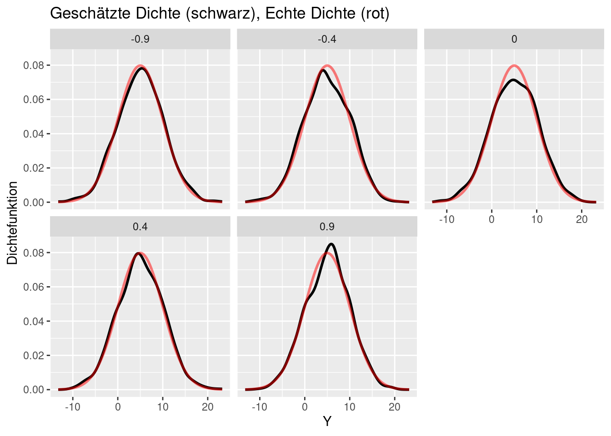

my_cov_matrix <- function(sigma_1, sigma_2, rho) {
entries <- c(
sigma_1^2, rho * sigma_1 * sigma_2,
rho * sigma_1 * sigma_2, sigma_2^2
)
matrix(entries, nrow = 2)
}
set.seed(35434)Übungsblatt 8
In dieser Aufgabe wollen wir die multivariate Normalverteilung genauer betrachten. Speziell gucken wir uns dazu zwei-dimensionale Normalverteilungen an. Dazu müssen wir zunächst die zugehörigen Parameter \(\mu \in \mathbb{R}^2\) und \(\Sigma \in \mathbb{R}^{2 \times 2}\) definieren können. Dies funktioniert über die c() und matrix() Funktionen.
Erstelle mit diesem Hinweis eine Funktion my_cov_matrix(sigma_1, sigma_2, rho), die eine Matrix \[
\begin{pmatrix}
\sigma_1^2 & \rho \sigma_1 \sigma_2 \\
\rho \sigma_1 \sigma_2 & \sigma_2^2
\end{pmatrix}
\] ausgibt.
Zugriff auf Matrixkomponenten
Wir können auf Einträge in Matrizen durch Angabe des Zeilen- und Spaltenindex zugreifen.
K <- my_cov_matrix(1, 2, 0.2)
K [,1] [,2]
[1,] 1.0 0.4
[2,] 0.4 4.0K[1, 2][1] 0.4Wir können aber auch auf ganze Zeilen und Spalten extrahieren, indem wir den Zeilen- oder Spaltenindex nicht angeben.
K[, 1]
## [1] 1.0 0.4
K[2, ]
## [1] 0.4 4.0Dieses Wissen werden wir im weiteren Verlauf dieser Aufgaben gebrauchen.
Simulation von multivariaten Normalverteilungen
Mithilfe der mvrnorm() aus dem MASS Paket, können wir nun Realisierungen von multivariaten Normalverteilungen simulieren. Diese Funktion funktioniert folgendermaßen:
MASS::mvrnorm(
n = 10, # Anzahl der Realisierungen,
mu = c(1, 5), # Parametervektor mu,
Sigma = my_cov_matrix(1, 3, 0.2) # Parametermatrix Sigma
) [,1] [,2]
[1,] 2.97397914 5.552607
[2,] -0.50644997 -1.177615
[3,] 2.55525634 3.823535
[4,] 1.49712591 7.046277
[5,] 0.77335118 7.920174
[6,] 2.07748453 1.000418
[7,] 1.21904731 1.420122
[8,] 0.25087893 1.336126
[9,] -0.01937914 5.058390
[10,] 1.57791766 6.256965Erstelle nun eine Funktion my_mvrnorm(n, mu_1, mu_2, sigma_1, sigma_2, rho), die in Abhängigkeit von \(\mu = (\mu_1, \mu_2)\) und der Matrix \[
\Sigma = \begin{pmatrix}
\sigma_1^2 & \rho \sigma_1 \sigma_2 \\
\rho \sigma_1 \sigma_2 & \sigma_2^2
\end{pmatrix}
\]
\(n\) Realisierungen der entsprechenden multivariaten Normalverteilung simuliert und diese in einem tibble mit den Spaltennamen X und Y abspeichert. Außerdem soll dieser tibble noch eine dritte Spalte rho enthalten, in der alle Einträge mit rho befüllt sind
library(tidyverse)
my_mvrnorm <- function(n, mu_1, mu_2, sigma_1, sigma_2, rho) {
realisations <- MASS::mvrnorm(
n = n,
mu = c(mu_1, mu_2),
Sigma = my_cov_matrix(sigma_1, sigma_2, rho)
)
tibble(
X = realisations[, 1],
Y = realisations[, 2],
rho = rho
)
}my_mvrnorm(10, 1, 5, 1, 0.5, 0)# A tibble: 10 × 3
X Y rho
<dbl> <dbl> <dbl>
1 0.00655 4.75 0
2 1.14 4.36 0
3 1.21 5.08 0
4 1.88 4.85 0
5 2.29 5.23 0
6 1.97 5.50 0
7 0.125 5.10 0
8 1.16 5.38 0
9 1.09 4.78 0
10 0.633 4.54 0Untersuchen von verschiedenen Rhos
Nimm nun an, dass \(\mu = (1, 5)\), \(\sigma_1 = 1\) und \(\sigma_2 = 5\). Nutze die Funktion my_mvrnorm(), um jeweils \(n = 1000\) multivariate Normalverteilungen mit Parametern \(\rho \in \{-0.9, -0.4, 0, 0.4, 0.9\}\) zu simulieren und in einem tibble zu sammeln. Die Funktion bind_rows() könnte dir dabei helfen. Erstelle anschließend den folgenden Plot, indem du jeweils die erste und zweite Koordinate deiner Zufallsvektoren auf die x- und y-Kooordinate in der Grafik mappst.
n <- 1000
mu_1 <- 1
mu_2 <- 5
sigma_1 <- 1
sigma_2 <- 5
simus <- my_mvrnorm(
n, mu_1, mu_2, sigma_1, sigma_2, -0.9
)
for (rho in c(-0.4, 0, 0.4, 0.9)) {
simus <- bind_rows(
simus,
my_mvrnorm(
n, mu_1, mu_2, sigma_1, sigma_2, rho
)
)
}
simus |>
ggplot(aes(X, Y)) +
geom_point(
alpha = 0.25, size = 2, col = 'dodgerblue4'
) +
facet_wrap(vars(rho)) +
theme_minimal(base_size = 16) +
labs('Zweidimensionale Normalverteilung für verschiedene Rhos')
Untersuchung der Randverteilung
Betrachte nun die Randverteilungen deiner Zufallsvektoren und vergleiche sie mit den entsprechenden Normalverteilungen
simus |>
ggplot(aes(x = X)) +
geom_density(linewidth = 1) +
geom_function(
fun = dnorm,
args = list(mean = mu_1, sd = sigma_1),
col = 'red',
alpha = 0.5,
linewidth = 1
) +
facet_wrap(vars(rho)) +
labs(
y = 'Dichtefunktion',
title = 'Geschätzte Dichte (schwarz), Echte Dichte (rot)'
)
simus |>
ggplot(aes(x = Y)) +
geom_density(linewidth = 1) +
geom_function(
fun = dnorm,
args = list(mean = mu_2, sd = sigma_2),
col = 'red',
alpha = 0.5,
linewidth = 1
) +
facet_wrap(vars(rho)) +
labs(
y = 'Dichtefunktion',
title = 'Geschätzte Dichte (schwarz), Echte Dichte (rot)'
)
Zusammenfassung der Aufgaben
my_cov_matrix()definieren (1)my_mvrnorm()erstellen (1)- Punktdiagramme erstellen (1)
- Dichtevergleich erstellen (1)